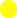

Productive
Unproductive
Neutral
Uncategorized
*
Note:Isolated nodes means that link(s) to the same page clicked. Two connected links
with website
names either means that a link from the first website were clicked and lead to the other (or vice-versa,
it is not
possible to know), or one lead to each other.
| Transition type |
Description |
| link |
The user got to this page by clicking a link on another page. |
| typed |
The user got this page by typing the URL in the address bar.
|
| reload |
The user reloaded the page, either by clicking the reload button or
by pressing
Enter in the address
bar. Session restore and Reopen closed tab use this transition type, too.
|
| auto_bookmark |
The user got to this page through a suggestion in the UI -
for example,
through a menu item.
|
| auto_subframe |
Subframe navigation. This is any content that is
automatically loaded in
a non-top-level frame. For
example, if a page consists of several frames containing ads, those ad URLs have this
transition type.
The user may not even realize the content in these pages is a separate frame, and so may not
care about
the URL (see also manual_subframe).
|
| manual_subframe |
For subframe navigations that are explicitly requested by
the user and
generate new navigation entries
in the back/forward list. An explicitly requested frame is probably more important than an
automatically
loaded frame because the user probably cares about the fact that the requested frame was
loaded.
|
| auto_toplevel |
The page was specified in the command line or is the start
page.
|
| form_submit |
The user filled out values in a form and submitted it. Note
that in some
situations - such as when a
form uses script to submit contents - submitting a form does not result in this transition
type.
|
| generated |
The user got to this page by typing in the address bar and
selecting an entry
that did not look like a
URL. For example, a match might have the URL of a Google search result page, but it might
appear to the
user as "Search Google for ...". These are not quite the same as typed navigations because
the user
didn't type or see the destination URL. See also keyword.
|
| keyword |
The URL was generated from a replaceable keyword other than the
default search
provider. See also
keyword_generated.
|
| keyword_generated |
Corresponds to a visit generated for a keyword. See also
keyword.
|